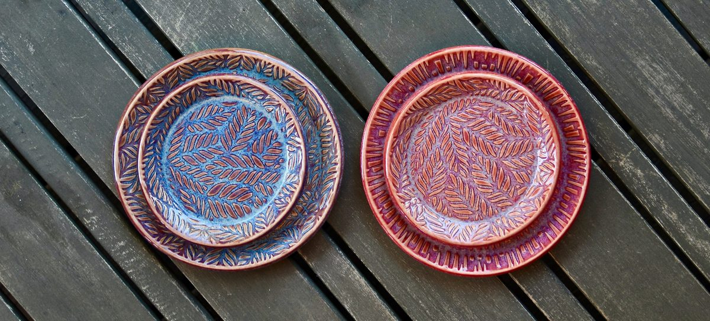

Kiln Kissed Ceramics by Bhavya Kothari creates small-batch, handmade bowls, plates, platters, and trinket dishes in Sunnyvale, CA. Each piece is thoughtfully crafted for everyday use and easy, thoughtful gifting around the South Bay and Silicon Valley.
Take a peek at the gallery to see what’s coming out of the kiln lately. If something catches your eye, you can visit the shop or look for Kiln Kissed Ceramics at local markets. We hope these pieces add a little joy and inspiration to your home.